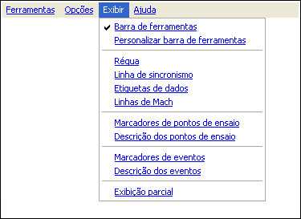

| Menu Exibir |
|
O menu “Exibir” permite alternar a exibição de objetos gráficos e auxílios do R_DAT, além de permitir exibir apenas um trecho da matriz de dados.
Através dele é
possível
exibir e ocultar os seguintes objetos:
- Barra de
Ferramentas;
- Régua e barra
de sincronismo;
- Etiquetas de
dados;
- Linhas de Mach
- Marcadores de
pontos de ensaio;
- Marcadores de
eventos.

| |
Início |
Barra de
Ferramentas |
|